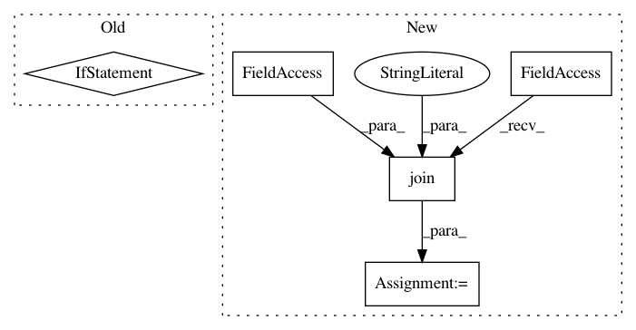

d32ecf41fbcfd2b050cf14a76638a9e5b9e5345a,lib/tests/streamlit/credentials_test.py,CredentialsClassTest,test_Credentials_save,#CredentialsClassTest#,179
Before Change
m = mock_open()
with patch("streamlit.credentials.open", m, create=True) as m:
c.save()
if sys.version_info >= (3, 0):
m.return_value.write.assert_called_once_with(truth)
else:
m.return_value.write.assert_called_once_with(truth2)
@patch("streamlit.credentials.util.get_streamlit_file_path", mock_get_path)
def test_Credentials_activate_already_activated(self):
Test Credentials.activate() already activated.
c = Credentials.get_current()
After Change
).lstrip()
streamlit_root_path = os.path.join("/mock/home/folder", util.CONFIG_FOLDER_NAME)
with patch(
"streamlit.credentials.open", mock_open(), create=True
) as open, patch("streamlit.credentials.os.makedirs") as make_dirs:
In pattern: SUPERPATTERN
Frequency: 4
Non-data size: 5
Instances
Project Name: streamlit/streamlit
Commit Name: d32ecf41fbcfd2b050cf14a76638a9e5b9e5345a
Time: 2019-10-08
Author: tconkling@gmail.com
File Name: lib/tests/streamlit/credentials_test.py
Class Name: CredentialsClassTest
Method Name: test_Credentials_save
Project Name: dmlc/gluon-nlp
Commit Name: 6955fab0f4f0a38ead24cec84152d82769a0cfa2
Time: 2019-06-21
Author: linhaibin.eric@gmail.com
File Name: scripts/bert/run_pretraining_hvd.py
Class Name:
Method Name:
Project Name: keras-team/autokeras
Commit Name: a71e59578a0ba78b81b40678ddd99e53edfc5fce
Time: 2019-01-03
Author: song_3134@tamu.edu
File Name: autokeras/tabular/tabular_supervised.py
Class Name: TabularSupervised
Method Name: __init__
Project Name: chainer/chainercv
Commit Name: 7e470179b0d874c43ec6d5dba11d7981ad83dff1
Time: 2017-03-10
Author: yuyuniitani@gmail.com
File Name: chainercv/datasets/sintel/sintel_dataset.py
Class Name: SintelDataset
Method Name: __init__